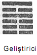
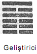Hadron yapısını, çeşitli tepkilere girme olasılıkları olarak tanımlayan S matriksi, yapı kavramına dinamik bir anlam kazandırmıştır. Aynı zamanda bu yapı yaklaşımı, deneysel olgularla da çok iyi bir uyuşum halindedir. Çünkü yüksek enerji çarpışma deneyleri sırasında hadronlar, diğer hadronların bileşkelerini oluşturacak biçimde parçalanmaktadırlar.
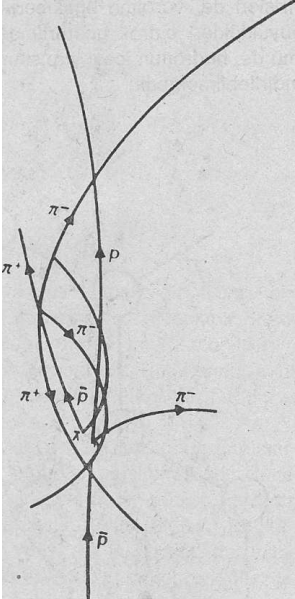
Protonlar, karşıt-protonlar, bir lambda-karşıt lambda çifti ve birçok pion içeren tepki ağı
Yani hadronların potansiyel olarak bu hadron bileşkelerinden «oluştukları» söylenebilmektedir. Böyle bir çarpışma sırasında oluşan parçacıklar da, çeşitli tepkilere neden olacak ve böylece kabarcık odasında fotoğrafını çekebildiğimiz büyük bir olaylar ağı olarak ortaya çıkacaklardır.
Hangi ağın hangi deney sonucu ortaya çıkacağı, bir olasılık işi olmasına rağmen, her ağ, belli kurallar çerçevesinde ortaya çıkmaktadır. Bu kurallar, daha önce sözünü ettiğimiz korunum yasalarıdır. Yani ancak tam olarak tanımlanmış Kuantum sayıları setinin korunabileceği tepkiler meydana gelebilecektir. Örneğin her tepki sırasında toplam enerji, sabit kalmak zorundadır. Bu, tepkiye dahil olan enerjinin, oluşturulacak kütleler için yeterli olması halinde tepkinin gerçekleşmesi demektir. Ayrıca meydana gelen parçacıklar gurubu, başlangıçtaki parçacıkların taşıdıkları Kuantum sayılarının aynılarına sahip olmak zorundadırlar. Örneğin toplam elektrik yükü sıfır olan bir proton ile bir π-, çarpışma sonunda parçalanmakta ve bir nötron ile bir π° meydana gelecek biçimde yeniden düzenlenmektedir. Ama hiç bir zaman bir nötron ile bir π+ ortaya çıkmayacaktır, çünkü bunların taşıdıkları toplam yük +1 olacaktır.
Demek oluyor ki, hadron tepkileri adeta, parçacıkların yaratıldığı ve yok olduğu bir enerji akımı gibidir. Ancak bu enerjiler, şiddetli etkileşimlerde korunan Kuantum sayıları ile ifade edilen «kanallardan» çıkabilmektedirler. Bu açıdan S matriksi kuramında, «tepki kanalı» olarak isimlendirilen kavram, genel bir parçacıktan çok daha önemlidir. Bu kavram, bir Kuantum sayısı seti olarak tanımlanmakta ve bunlar da, çeşitli hadron bileşkelerinde ve çoğunlukla da tek bir hadronda bulunmaktadırlar. Hangi hadron bileşkesinin hangi kanaldan geçeceği, bir olasılık meselesidir ve en başta var olan enerjiye bağlıdır.
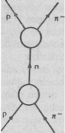
Örneğin yukarıdaki diyagramda, bir proton ve bir π- arasındaki etkileşimi ve bir nötronun geçici olarak oluşumunu görmekteyiz. Yani buradaki «tepki kanalı» ilk önce iki hadron tarafından belirlenmekte, daha sonra ise tek bir hadron tarafından ve nihayet yine iki hadron tarafından ortaya konulmaktadır. Eğer daha fazla enerji kullanma imkânımız varsa, aynı kanal, bir Λ-K° çifti, bir ∑- K+ çifti ya da diğer bir çok bileşkeler aracılığı ile de oluşabilecektir.
«Tepki kanalları» yaklaşımı, rezonanslar için de (sınırlı da olsa) uygulanabilmektedir. Rezonanslar, tüm şiddetli etkileşimlerde görülen çok kısa süreli hadron durumlarıdır. Bunlar o kadar kısa ömürlü fenomenlerdir ki, fizikçiler önceleri rezonansları ayrı parçacıklar olarak sınıflamak bile istememişlerdir.
Günümüzde rezonansların özelliklerini belirleyebilmek, deneysel yüksek enerji fiziğinin en önemli görevlerinden biridir. Rezonanslar, hadron çarpışmaları sırasında meydana gelirler ve neredeyse oluştukları anda yine parçalanırlar. Bunlar kabarcık odasında görülememelerine rağmen, tepki olasılıklarındaki çok özel davranışlar dolayısı ile belirlenebilmektedirler. İki tane çarpışan hadronun bir tepkiye girmesi (yani birbirleriyle etkileşmeleri), çarpışma sırasındaki enerjiye bağlıdır. Eğer enerji miktarı değiştirilirse, söz konusu olasılık da değişecektir. Tepkinin detaylarına bağlı olarak, artan enerji ile olasılık artacak ya da azalacaktır. Ancak, belirli enerji değerlerinde, tepki olasılığının bariz bir biçimde arttığı görülmektedir. Yani bir tepkinin meydana gelmesi, bu enerji değerlerinde daha olasıdır. Bu keskin artış, o andaki enerjiye denk düşen bir kütleye sahip olan, kısa ömürlü bir aracı hadronun oluşması ile birlikte gözlenmektedir.
Söz konusu kısa ömürlü hadron durumlarının «rezonanslar» olarak isimlendirilmiş olmaları, titreşimlerde rastlanan ve çok iyi bilinen rezonans fenomeni ile olan benzerliklerine dayanmaktadır. Örneğin ses fenomeninde, bir oyuğun içindeki hava, dışarıdan gelen bir ses dalgasına hafifçe karşılık vermekte; fakat ses dalgasının «rezonans frekansı» denilen bir değere ulaşması ile birlikte, şiddetli bir «rezonans» göstermekte> ya da birlikte titreşmeye başlamaktadır. Bir hadron «tepki kanalı» böyle bir titreşen oyu/k ile rahatlıkla karşılaştırılabilir. Çünkü çarpışan hadronların enerjisi, ona denk düşen olasılık dalgasının frekansı ile yakından ilgilidir. Söz konusu enerji ya da frekans, belirli bir değere ulaştığında, kanal da titreşmeye (rezonans göstermeye) başlayacaktır. Böylece olasılık dalgasının titreşimleri ansızın güçlenmekte ve sonuç olarak da tepki olasılığındaki keskin artış meydana gelmektedir «Tepki kanallarınım» çoğunda, birçok rezonans enerjileri görülmekte ve bunların her biri çok kısa ömürlü bir aracı hadronun kütlesine denk düşmektedir. Söz konusu aracı hadron da, çarpışan parçacıkların enerjileri uygun bir rezonans değerine ulaştığında, ansızın ortaya çıkmaktadır.
S matriks kuramı çerçevesinde, rezonans «parçacıklarının» var olup, olmadıkları tartışması yoktur. Burada bütün parçacıklar bir tepki ağı içindeki aracı ve geçici durumlar olarak görülmekte ve rezonansların diğer hadronlardan çok daha kısa bir süre var olmaları sonuçta bir farklılık olarak addedilmemektedir. Aslında «rezonans» kelimesi çok uygun bir terimdir. Çünkü hem «tepki kanalındaki fenomen için ve hem de bu fenomenin sonucunda ortaya çıkan hadron için rahatlıkla kullanılabilmektedir. Böylece parçacıklar ve tepkiler arasındaki ayrılmaz bağ da çok güzel bir biçimde yansıtılmış olmaktadır. Yani bir rezonans, bir parçacık olmasına rağmen bir nesne değildir. Bence onu daha çok bir olay, bir varoluş ya da bir vak'a olarak açıklamak daha yerinde olur.
Parçacık fiziğinde yaptığımız bu hadron tartışması, aklıma daha önceki bölümlerde belirttiğim D. T. Suzuki'nin söylediklerini getirmektedir: «Buddhistler bir nesneyi, bir cisim ya da bir öz olarak değil, sadece bir olay olarak düşünürler.» Buddhist'lerin doğayı mistik bir tecrübe ile kavramaları sonucunda ortaya çıkardıkları şey, günümüzde modern bilimsel deneylerin ve matematiksel kuramların yardımı ile yeniden keşfedilmiştir.
Tüm hadronları bir tepki ağındaki geçici durumlar olarak açıklayabilmek için, karşılıklı olarak etkileştikleri kuvvetleri de dikkate almak gerekir. Bu şiddetli etkileşim kuvvetleri hadronları saptırmakta, (ya da «scatter» ettirmektedirler), onları farklı kalıplara sokmakta ve bu kalıp guruplarını bağlanmış durumları yaratacak biçimde birleştirmektedirler. S matriks kuramımda (alan kuramında olduğu gibi), bu etkileşim kuvvetleri parçacıklarla ilişkilendirilmekte, fakat «sezilgen parçacık» kavramı kullanılmamaktadır. Bunun yerine, kuvvetler ve parçacıklar arasındaki ilişki, S matriksinin «çaprazlama» denilen ilginç bir özelliğine dayandırılmaktadır. Bu özelliği açıklayabilmek için bir proton ile bir π- arasındaki etkileşimi gösteren aşağıdaki diyagramı göz önünde bulunduralım.
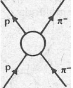
Eğer bu diyagramı doksan derecelik bir açıyla çevirir ve daha önce kabul ettiğimiz şartları değiştirmezsek (konuyla ilgili önceki sayfalara bakınız), aşağıya doğru gösteren oklar karşıt-parçacıkları gösterecek ve yeni diyagram da bir karşıt-proton (p-) ile bir proton (p) arasındaki tepkiyi belirlemeye başlayacaktır. Bu tepki sonucunda ise bir pion çifti meydana gelecektir (burada π+, ilk önceki tepkide bulunan π-'nin karşıt-parçacığıdır).
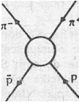
S matriksinin çaprazlama özelliği, her iki sürecin de aynı S matriksi öğesi ile gösteri im ekte olduğunu ortaya koymaktadır. Bu da, söz konusu iki diyagramın aynı tepkinin yalnızca iki farklı yönünü, ya da «kanalını» yansıtmaları anlamına geliri.(*). Parçacık fizikçileri, hesaplamalarında bir kanaldan diğerine atlayabilmekte ve diyagramları döndürmek yerine onları aşağıdan yukarıya ya da soldan sağa doğru okumakta ve «dik kanal» (veya «doğrudan kanal») ve «çapraz kanaldan söz etmektedirler. Böylece örneğimizdeki tepki doğrudan kanalda p + π-→ p + π- biçiminde ve çapraz kanalda da p- + p+ → π- + π+ biçiminde okunmaktadır.
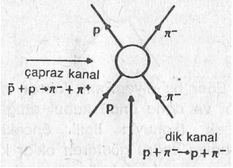
Kuvvetler ve parçacıklar arasındaki bağlantı ise, her iki kanalda bulunan aracı durumlar yardımı ile belirlenmektedir. Örneğimizdeki dik kanalda, proton ile π-, aracı bir nötron yaratabilmekte, ancak çapraz kanal yalnızca bir tek nötr aktarıcı (aracı) pion (π-) ile oluşturulabilmektedir.
(*) Aslında diyagram daha da döndürülebilir ve her bir çizgi farklı süreçler oluşturacak biçimde çaprazlaştırılabilir. Bunlar yine de aynı S matriksi ile gösterilmektedir. Her -bir matriks öğesi, toplam olarak altı tane farklı süreci yansıtabilmektedir. Ancak yalnızca bunlardan iki tanesi, etkileşim kuvvetleri ile ilgili tartışmamızda önem arzetmektedir.
Bu pion (yani, çapraz kanaldaki aracı durum), dik kanalda etki eden ve nötronu oluşturmak üzere protonu ve π- yi birbirine bağlayan kuvvetlerin belirişi olarak yorumlanmaktadır. Yani kuvvetleri ve parçacıkları ilişkilendirebilmek için her iki kanala da ihtiyaç vardır. Çünkü bir kanalda bir kuvvet olarak beliren şey, diğer kanalda bir aracı parçacık olarak ortaya çıkmaktadır.
Bir kanaldan diğerine matematiksel açıdan çok kolay bir biçimde geçilebilmesine rağmen, bu atlayış hakkında sezgisel bir fikir geliştirebilmek de o kadar zor ve hatta imkânsızdır.
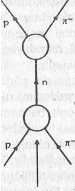Dik kanal
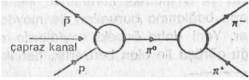çapraz kanal
Çünkü «çaprazlama» olayı, izafiyet kuramının dört boyutlu formalizminden doğan, çok temelli bir izafiyet kavramını oluşturmakta ve bu nedenle de göz önünde canlandırılabilmesi çok zor olmaktadır. Buna benzer bir durum, etkileşim kuvvetlerinin sezilgen parçacıkların değiş-tokuşu olarak açıklandığı alan kuramında da görülmektedir. Aslında çapraz kanalda bulunan aracı pionu gösteren diyagram, bu şekliyle saz konusu parçacık alışverişini açıklayan Feynman diyagramlarına çok benzemektedir.(*) Bu yüzden insanın, bir proton ile bir π-, «bir π◦ ın değiş-tokuşu ile etkileşmektedir» diyesi geliyor. Buna benzer kelimeleri fizikçiler çok kullanmalarına rağmen, söz konusu durumu yine de tam olarak algılayamamaktadırlar. Tatmin edici bir açıklama, ancak doğrudan ve çapraz kanal terimleri ile sağlanabilmekte, yani neredeyse hiç bir biçimde göz önüne getirilememektedir.
(*) Yine de S matriks diyagramlarının uzay-zaman diyagramları olmadıklarını ve parçacık tepkilerinin simgesel temsilleri olduklarını hatırlatmakta yarar vardır. Çünkü bir kanaldan diğerine yapılan atlayış, soyut bir matematiksel uzayda meydana gelmektedir.
S matriks kuramında görülen farklı formalizmlere rağmen, genel yaklaşım, alan kuramındaki etkileşim kuvvetlerine çok benzemektedir. Her iki kuramda da söz konusu kuvvetler, parçacıklar yardımı ile belirmekte ve sahip oldukları kütleleri de bu kuvvetin menzilini göstermektedir. Yine her iki kuramda, kuvvetler etkileşen parçacıkların içsel özellikleri olarak algılanmaktadır. Bu kuvvetler, alan kuramında parçacığın sahip olduğu sezilgen bulutların yapısını yansıtmakta ve S matriks kuramında ise etkileşen parçacıkların bağlanma durumları ile meydana gelmektedirler. Yani daha önceki sayfalarda açıkladığımız Doğu görüşü ile olan benzerlik, her, iki kuram için de geçerlidir. Ayrıca söz konusu etkileşim kuvvetleri ile ilgili görüş, bilinen tüm parçacıkların bir içsel yapıya sahip olmaları gerektiği sonucunu doğurmaktadır. Çünkü ancak o zaman gözlemciyle etkileşebilecekler ve böylece de gözlenebileceklerdir. S matriks kuramının kurucularından ola o Geoffrey Chew bu konuda: «Tamamen elemanter bir parçacık (yani, hiç bir yapıya sahip olmayan bir tanecik), onu gözlemleyebileceğimiz ve varlığını ispatlayabileceğimiz herhangi bir kuvvetin etkisi altında kalmayacaktır. Ancak, parçacıkların var olduklarını bildiğimiz için, onların içsel bir yapıya sahip olduklarını da söyleyebiliriz» biçiminde bir ifade kullanmaktadır(2).
S matriksinin bir diğer avantajı da, bir büyük hadron ailesinde cereyan eden «değiş-tokuşları» açıklayabilmesidir. Bir önceki bölümde anlatıldığı gibi, bütün hadronları, üyelerinin özdeş özellikler gösterdiği alt bölümlere ayrılabilmekte ve yalnızca kütle ile spinlerinde bazı farklılıklara rastlayabilmekteyiz ilk önce Tullio Regge tarafından önerilen bir formalizme göre, söz konusu bütün alt bölümler çeşitli uyarılmış durumlarda bulunan tek bir hadron olarak ele alınabilmektedir. Son yıllarda Regge formalizmi, S matriksi çerçevesinde ele alınabilmiş ve hadron tepkilerini açıklamakta çok başarılı olmuştur. Bu ise, S matriks kuramındaki en önemli gelişmelerden birini meydana getirmiş ve parçacık kalıplarının dinamik açıklamışına doğru bir ilk adım niteliğini kazanmıştır. Buna göre S matriks i çerçevesi, hadronların yapısını, karşılıklı olarak etkileştikleri kuvvetleri ve oluşturdukları bazı kalıpları dinamik bir biçimde açıklayabilmekte ve bu çerçevede bütün hadronlar da ayrışamaz bir tepkiler ağının bütünsel öğeleri olarak kabul edilmektedirler. Ancak S matriks kuramının bugüne kadar çözümlenemeyen en önemli problemi, söz konusu dinamik açıklamaları, daha önceki bölümde tartıştığımız hadron kalıpları ite korunum yasalarını, simetri kurallarına uygulayabilmektir. Böyle bir kuramda, söz konusu hadron simetrileri, S matriksinin matematiksel yapısı tarafından yansıtılacak ve böylece yalnızca korunum yasalarına uygun görülen tepkilerin öğelerini de içerecektir. Söz konusu kurallar daha sonra ampirik düzenlilikler cinsinden bir statüden kurtulacaklar ve S matriks yapısının bir sonucu olacaklar, böylece de hadronların dinamik doğasının bir neticesi halini alacaklardır.
Günümüzde ise fizikçiler, bu önemli hedefi yerine getirmeye çalışırlarken, bazı genel ilkeler kurmakta, böylece S matriks öğelerinin oluşturulmasının matematiksel olasılıklarını sınırlamakta ve bunun sonucu olarak da S matriksime kesin bir yapı kazandırmaktadırlar. Şimdiye dek bu genel ilkelerin üç tanesi yerleşmiş bir durumdadır. Bu ilkelerden birincisi, izafiyet kuramı tarafından ve makroskopik uzay ve zaman tecrübemiz aracılığı ile ortaya atılmıştır. Buna göre tüm tepki olasılıklarının (ve böylece tüm S matriks öğelerinin), deney aygıtlarının zaman ve uzay içindeki hareketlerinden, uzaydaki yönünden ve gözlemciye oton hareket durumundan bağımsız olması gerekmektedir. Önceki bölümde tartışıldığı gibi, bir parçacık tepkisinin uzay ve zaman içindeki yön ve yer değişiminden bağımsız olması, bu tepkideki dönel hareketin, momentin ve enerjinin toplam miktarının korunumuna neden olacaktır. Bu «simetriler» bilimsel çalışmalarımız çerçevesinde çok önemli bir yere sahiptirler. Eğer bir deneyin sonucu, onun nerede ve ne zaman yapılmış olduğuna bağlı olarak değişseydi, şu anda uygulanan biçimi ile bir bilim var olamazdı. Son gereklilik ise (yani, deneysel sonuçların, gözlemcinin hareketine göre bağımsız olma gerekliliği), izafiyet kuramının temelini teşkil eden bir özeli ilktir.
İkinci genel ilke ise, Kuantum kuramı, tarafından ortaya atılmıştır. Buna göre, bir parçacık tepkisinin sonucu ancak olasılıklarla belirlenmekte ve dahası, mümkün bütün sonuçların (parçacıklar arasında etkileşimin olmaması dahil) toplamları, bire denk düşmektedir. Yani bir başka deyişle, parçacıklar ya birbirleriyle tepkimeye girecekler ya da girmeyeceklerdir. Basit ve açık gibi görünen bu açıklama, aslında «birleşiklik» ismi altında çok güçlü bir araç haline gelmektedir. Ancak bu ilke, S matriks öğelerini geliştirme imkânlarımızı çok sınırlamaktadır.
Üçüncü ve son ilke ise, sebep ve sonuç yaklaşımlarımızla ilgilidir ve nedensellik ilkesi olarak tanınmaktadır. Buna göre enerji ve momentler, uzaysal uzaklıklara ancak parçacıklar vasıtasıyla yayılabilmekte ve bu yayılma bir parçacığın yaratılması ya da yok olması sonucunu doğurmaktadır. Ama bir tepki oluşmadan, diğer bir tepkiye geçme imkânımız da yoktur. Yani ilk önce bir tepki, sonra bir başkası meydana gelecektir. Nedensellik ilkesinin matematiksel formülasyonu, S matriksinin bir tepkiye dahil olan parçacıkların enerjilerine ve momentlerine dayandığını göstermektedir. Ancak yeni parçacıkların oluşabilme olasılığı için bu durum geçerli değildir. Çünkü bu değerlerde S matriksinin matematiksel yapısı birdenbire değişmektedir. Bu durumda, matematikçilerin «tekillik» dedikleri (singularity) durumu ortaya çıkar. Örneğin her bir «tepki kanalı» böyle tekilliklerden bir kaç tanesini içermektedir. Yani her kanalda yeni parçacıkların yaratılabildiği bir çok enerji ve moment değerleri bulunmaktadır. Daha önce anlattığımız «rezonans enerjileri», bu tür değerlere örnektirler.
S matriksinin tekillik göstermesi, nedensellik (causalitiy) ilkesinin bir sonucudur. Ancak bu yöntem yardımı ile tekilliklerin konumları belirlenememektedir. Parçacıkların ortaya çıkabileceği enerji ve moment değerleri, farklı «tepki kanalları» için farklı değerler arzetmektedir ve yaratılan parçacıkların kütleleri ile diğer özelliklerine bağlıdır. Yani tekillik konumlarının belirlenmesiyle söz konusu parçacıkların özellikleri de ortaya çıkmış olur. Bütün hadronlar parçacık tepkileri sonucu yaratılabildiklerine göre, S matriksindeki tekillikler de hadronların bütün kalıp ve simetrilerini yansıtabilecek özelliklere sahip olmaktadırlar. Bu açıdan, S matriksinin tekillik yapısını genel ilkelerden yola çıkarak belirleyebilmekteyiz. Ancak şu ana kadar her üç ilkeyi de göz önünde bul un durabilen yeterli bir matematiksel model geliştirilememiştir. Ama yine de bunların özgün bir biçimde S matriksinin özelliklerini (ve bu çerçevede tüm hadron özelliklerini) yansıtabilecekleri düşünülebiliri.(*) Eğer bunun gerçekten de mümkün olduğu anlaşılırsa, bu şekilde gerçekleştirilen bir kuramın felsefî etkileri de olağanüstü olacaktır. Genel ilkelerin üçü de, gözem ve ölçüm tekniklerimiz ile ilgilidir, yani belirli bir bilimsel çevreye bağlıdır.
(*) «Çizme bağı» (boot-strap) hipotezi olarak bilinen bu varsayım, sonraki bölümde daha detaylı biçimde ele alınacaktır.
Ancak bu yöntemin hadron yapısını belirleyebilmemiz için yeterli olduğu ortaya çıkarsa, fiziksel dünyanın temel yapılarının onlara nasıl baktığımıza bağlı olduğu ortaya çıkacaktır. Gözlemsel yöntemlerimizde gerçekleştirilen herhangi önemli bir değişim, söz konusu genel ilkelerde de önemli değişimlere neden olacak ve bu da, S matriksinin farklı bir yapı kazanmasına yol açacaktır. Bu sebeple de hadronların yapısı farklılaşacaktır.
Atom-altı parçacıklar ile ilgili böyle bir kuram, bilimsel gözlemcinin gözlenen fenomen ile ayrışamayacağını ortaya koymaktadır. Bu durumu, Kuantum kuramı çerçevesinde en aşırı şekliyle daha önce görmüştük. Yani sonuç olarak, doğada gözlemlediğimiz fenomenlerin, ölçen ve kategorize eden aklımızın birer kreasyonu (ürünü) oldukları bir kez daha ortaya çıkmaktadır.
Bu aynı zamanda, Doğu felsefesinin en temel inanışlarından biridir. Doğu mistikçileri burada da, algıladığımız tüm nesne ve olayların aklımızın kreasyonlarını oluşturdukları tekrar tekrar vurgulanmaktadırlar. Bu algı biçimleri, Doğu mistikçilerine göre, belirli bir bilinçlilik durumuna tekabül etmekte ve bu durum aşıldığında ise, yine ortadan kaybolmaktadır. Hinduizm'e göre, çevremizde bulunan tüm şekil ve tasarımlar aklımızın birer eseridir ve «maya»nın büyüsü altındadır. Onlara büyük bir önem vermemiz, bir hayale kapılmak olarak değerlendirilmektedir. Buddhist'ler bu hayale «avidya» (ya da, cehalet) demekte ve onu, «kirlenmiş» akıl durumunun bir neticesi olarak görmektedirler. Aşvagoşa'nın dediği gibi:
«Tüm nesnelerin birliği anlaşılamaz olduğundan, cehalete ve ayrıştırmaya yol açar. Böylece de «kirlenmiş aklın» tüm evreleri ortaya çıkmaya başlar... Dünyadaki bütün fenomenler, aklın hayalî belirimlerinden başka bir şey değildir. Bu hayaller, kendi başlarına hiç bir gerçekliğe sahip değildirler»(3).
Bu, Buddhist Yogacara okulunun da önde gelen ve sürekli tekrarlananı temasıdır. Buna göre algıladığımız bütün biçimler «yalnızca akla aittirler». Yogacara'cılar, aklımızın projeksiyonları ya da «gölgelerinden» bahsetmektedirler:
«Aklımız, sayısız nesneleri oluşturabilmekte ve ayrıştırma yeteneğine dayanarak bu konuda çok başarılı olmaktadır... Bu nesneleri insanlar, dışsal dünya olarak kabul etmektedirler... Dışsal gibi görünen, gerçekte var olmamaktadır. Bu aslında yalnızca çeşitlilik kazanmış akıldır. Beden, sahiplik ve ötesi; bunların hepsi bana göre akıldan başka bir şey değildir» (4).
Parçacık fiziği dalında, hadron kalıplarını S matriks kuramının genel ilkelerinden yola çıkılarak türetmek çabası, uzun ve zahmetli bir iştir. Günümüze kadar bu yönde ancak birkaç küçük adım atılabiliri iştir. Ayrıca, söz konusu kuram, bu biçimi ile atomsal yapıları oluşturan ve kimya ile biyoloji dünyasına egemen olan elektromanyetik etkileşimler için de kullanılamamaktadır. Ancak buna rağmen, hadron kalıplarının bir gün bu genel ilkelere dayanılarak türetilebileceklerine inanabiliriz. Bunun, parçacık fiziğinin en genel bir özelliği olacağı da ilginç bir varsayımdır. Çünkü daha ileride elektromanyetik, hafif ve yerçekimsel etkileşimler için de bu kuramın uygulanması söz konusu olabilir. Eğer böyle bir şey gerçekten vuku bulursa, modern fizik. Doğu bilgeleriyle aynı sonuçlara varacak ve fiziksel dünyadaki yapıların «maya» ya da «yalnızca akla ait» olduklarını söyleyeceklerdir.
S matriks kuramı. Doğu düşüncesine yalnızca sonuçları açısından değil, aynı zamanda madde hakkındaki temel görüşleri açısından da benzemektedir. Söz konusu kuram, atom-altı parçacıkların dünyasını, olayların dinamik bir ağ olduklarını söyleyerek açıklamakta ve temel yapılar ya da varlıklardan çok, değişim ve dönüşüme önem vermektedir. Doğu'da ise, buna benzer bir vurgulamaya, tüm nesnelerin dinamik, süreksiz ve hayalî olduklarını savunan Buddhist öğretide rastlanmaktadır. Bu konuda S. Radhakrişnan şunları yazıyor:
«Nasıl olur da bu mutlak akış içinde süreçlerden çok nesneleri düşünürüz? Peş peşe gelen olaylara gözlerimizi kapamamız nedeniyle tabii. Ama bu, yapay bir yaklaşımdır ve değişimin akışı içinde ayrımlar yapmak suretiyle onlara, nesne adı yapay bir şekilde verilmiştir... Nesnelerin gerçeksizliğini anladığımız zaman, değişimler serisinin yalıtılmış ürünlerine sanki sonsuz ve gerçekmiş gibi davranmamızın ne kadar da saçma olduğunu anlarız. Hayat, bir nesne ya da bir nesnenin durumu değildir. Hayat, sürekli bir hareket veya sürekli bir değişimdir»(5).
Artık hem fizikçi ve hem de Doğu mistikçisi, bu değişimler ve farklılaşmalar dünyasındaki bütün fenomenlerin, dinamik bir biçimde birbirlerine bağlanmış olduklarını kavramıştır. Hindu'lar ve Buddhist'ler bu karşılıklı ilişkiyi, bir kozmik yasa olarak görmekte ve buna «karma» yasası demektedirler. Ancak onlar, olayların evrensel ağı içindeki kısmî kalıplarla ilgilenmemektedıirler. Öte yandan Çin felsefesi de hareket ve değişimi vurgulamaktadır. Çin'de, Tao'nun kozmik akışı içinde sürekli olarak biçimlenen ve ayrışan dinamik kalıplar yaklaşımı geliştirilmiştir. I Ching'de (yani, Değişimler Kitabı'nda), bu kalıplar, hexagramlar olarak anılan gelişmiş bir simge sistemine dönüştürülmüştür.
I Ching'deki kalıpların düzenleyici temel ilkesini, kutupsal karşıtlıklar denilen Yin ve Yang çifti oluşturmaktadır. Yang, düz bir çizgi ile temsil edilmekte ( — ) , Yin ise, kesik bir çizgi dizisi ile (- -) gösterilmektedir. Hexagramların tümü, bu iki çizgiden meydana getirilmişlerdir. Bu çizgiler, çiftler oluşturacak biçimde kombine edilirlerse, dört farklı bileşim ortaya çıkacaktır.
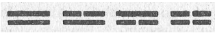
Bir üçüncü çizginin ilâve edilmesi ile sekiz tane «trigram» elde edilir.
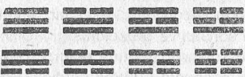
Eski Çin'de, trigramların mümkün olabilen bütün kozmik ve insansal durumları temsil ettiklerine inanılırdı. Bu açıdan onların her birine, temsil ettiği temel özelliğe uygun bir isim verilmişti («Yaratıcı», «Kabul Edici», «Canlandırıcı» gibi). Doğadan alınan çok çeşitli imajlarla bu simgeler «renklendirilmişlerdi». Örneğin bunlar; göğü, dünyayı, şimşeği, suyu vs.yi yansıttıkları gibi; bir babadan, bir anneden, üç oğuldan ve üç kızdan oluşan bir aileyi de temsil edebiliyorlardı. Söz konusu simgeler ayrıca dört ana yönü ve yılın mevsimlerini de yansıtmakta ve genelde şu biçimde düzenlenmekteydiler:
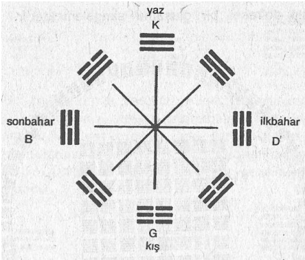
Bu düzenlemede, sekiz tane trigram, «doğal» düzen içinde bir dairenin çevresine yerleştirilmiştir. Bundan dolayı yukarıdan başlayıp (Çinli'lere göre Güney hep yukarıdadır), ilk dört trigramı dairenin sol tarafına, diğer dördünü de dairenin sağ tarafına çizmişlerdir. Ayrıca bu düzenleme, yüksek bir simetri göstermektedir. Çünkü karşı karşıya gelen trigramlarda Yin ve Yang'ların yerleri değiştirilmiştir.
Olabilecek kombinasyonları daha da artırabilmek için, trigramlar üstüste konularak yeniden çiftler haline getirilmişlerdir. Bu şekilde altmış dört tane hexagram elde edilmiştir. Bunlardan her biri ise, altı tane düz ya da kesik çizgiden meydana gelmektedir. Söz konusu hexagramlar, çeşitli düzenli kalıplar halinde gösterilebilmektedirler. Bunlardan en yaygın biçimde kullanılan iki tanesi aşağıda gösterilmiştir. Bunlardan ilki sekiz çarpı sekiz tane hexagramdan oluşan bir kareyi, ikincisi ise, trigramlar düzenine sahip dairesel bir oluşumu simgelemektedir.
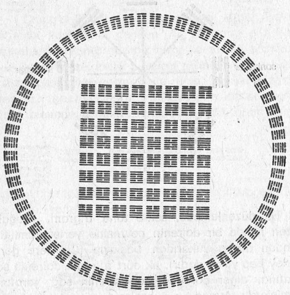
64 hexagramın iki ayrı diziliş biçimi
Söz konusu altmış dört hexagram, kozmik simgeler olarak kabul edilmiş ve I Ching de bu anlamda bir kehanet kitabı olarak kullanılmaya başlanmıştır. Herhangi bir hexagram ı yorumlamak için, onu oluşturan trigramların farklı anlamları da dikkate alınmalıdır. Örneğin «Canlandırıcı» trigramı, «Kabul Edici» trigramının üstüne konduğunda, meydana gelen hexagram, hareketlilik ve sadakat olarak değerlendirilecek ve bu neden dolayı da bu hexagrama «Coşkulu» ismi verilecektir.
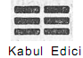 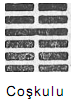
Bir başka-örnek verelim: «Geliştirici» hexagramını, «kenetlenmek isteyen» trigramını «Kabul Edici» trigramının üstüne koyarak elde edebiliriz. Bu ise dünyanın üstüne doğan güneş olarak yorumlanmakta ve bundan dolayı da hızlı ve kolay bir gelişimi yansıtmaktadır.
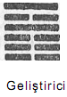
Trigramlar ve hexagramlar, I Ching'de, Tao'nun kalıpları olarak yorumlanmaktadır. Bu kalıplar, Yin ve Yang'ın dinamik etkileşiminden meydana gelmekte, tüm kozmik ve insansal durumları yansıtmaktadırlar. Bu nedenle söz konusu durumlar, statik olarak değil, aksine sürekli bir akış ve değişim içindeki basamaklar olarak algılanmaktadırlar, işte bu. Değişimler Kitabı'nın en temel fikrimi oluşturmaktadır. Zaten bu özelliğe, kitabın özgün ismi de işaret etmektedir. Dünyadaki bütün nesne ve durumlar, değişim ve başkalaşımın etkisi altındadır. Bundan dolayı trigramlar ve hexagramlar da aynı özelliği yansıtmaktadırlar. Bunlar da sürekli olarak bir değişim durumunda bulunurlar. Burada her şey değişmekte, düz çizgiler dışarı taşmakta, kırılmakta ve kesik çizgiler oluşturmakta; kesik çizgiler de içeri kaymakta ve birbirlerine yapışarak düz çizgiler meydana getirmektedirler.
Değişimin ve başka taşı m in bir sonucu olan dinamik kalıplar yaklaşımı, I Ching'i Doğu düşüncesinin S matriks kuramı haline getirmiştir. Çünkü her iki sistemde de, nesnelerden çok süreçler vurgulanmaktadır. S matriks kuramında, bu süreçler, hadronların dünyasındaki tüm fenomenlere neden olan parçacık tepkilerini yansıtmaktadırlar. I Ching'de ise, aynı temel süreçler «değişimler» olarak isimlendirilmekte ve bütün doğal fenomenleri anlamamızda en önemli unsuru oluşturmaktadırlar:
«Değişimler, kutsal bilgelerin, nesnelerin derinliklerine ya da tohumlarına uzanabilmelerini sağlamışlardır» (6).
Değişimler, fiziksel dünyaya yakıştırılmış temel yasalar değildirler. Daha çok, Hellmut Wilhelm'in deyimi ile, «herhangi bir gelişimin doğal olarak, kendiliğinden ve içsel bir şekilde meydana gelme olasılığını» gösterdikleri düşünülmektedir(7). Aynı şeyler, parçacık dünyasındaki «değişimler» için de söylenebilir. Onlar da parçacıkların içsel eğilimlerini yansıtmaktan çok, S matriks kuramındaki bazı tepki olasılıkları olarak gösterilmektedirler.
Hadron dünyasındaki değişimler, sembolik olarak «tepki kanalları» ile gösterilen simetrik kalıplara ve yapılara sebep olmaktadırlar. Ne söz konusu yapılar ve ne de sözü edilen simetriler hadron dünyasının temel özellikleri olarak algılanmamalıdır. Bunları daha çok, parçacıkların dinamik doğalarının sonucu olarak değerlendirmek ve değişme ve başkalaşma eğilimlerini yansıttıklarını varsaymak gerekir.
I Ching'de de değişimler bazı yapıların (yani, trigramların ve hexagramların) oluşmasına sebep vermektedirler. Parçacık tepkisinde görülen kanallarda olduğu gibi bunlar da değişim kalıplarının sembolik birer anlatımlarıdır. Tepki kanallarından enerjinin geçmesine benzer bir biçimde, «değişimler» de hexagram çizgilerinden akmaktadırlar:
«Değişim, hiç durmadan hareket.
Altı adet boş yerden akıp giden,
Sabit bir yasa olmaksızın yükselen ve
alçalan,
…
işte burada cereyan eden yalnızca
değişimdir» (8).
Çin görüşüne göre, çevremizde bulunan bütün nesne ve fenomenler, değişim kalıplarından ortaya çıkmakta ve trigramlarla hexagramların çeşitli çizgileri ile gösterilmektedirler. Yani fiziksel dünyada varolan cisimler statik ve bağımsız nesneler olarak değil, Tao olarak isimlendirilen kozmik sürecin geçici durumları biçiminde görülmektedirler:
«Tao'da değişim ve hareket vardır. Bundan dolayı da çizgilere, değişim çizgileri denmektedir. Bu çizgilerde de değişim olduğundan, bunlar hep beraber cisimleri temsili ederler» (9).
Parçacıklar dünyasında olduğu gibi, değişimlerden türetilen yapılar da çok sayıda farklı simetrik kalıplar halinde düzenlenebilmektedirler. Örneğin sekiz tane trigramdan, sekizgen bir kalıp elde edilmekte ve bu kalıpta karşılıklı olarak duran trigramlar, Yin ve Yang'ın değiştirilmiş yerleri olarak gözükmektedirler. Bu kalıp, önceki bölümde ele aldığımız meson oktetine de benzemektedir. Meson oktetinde, parçacık ve karşıt-parçacıklar karşı karşıya gelmekteydiler. Ancak önemli olan husus, söz konusu tesadüfi benzerlik değil, modern fiziğin ve eski Çin düşüncesinin, değişim ve farklılaşmayı doğanın birincil özelliği olarak değerlendirmeleridir. Söz konusu değişimlerden türeyen yapı ve simetriler, bu iki görüşe göre, yalnızca ikincil bir konumda bulunmaktadırlar. Richard Wilhelm'in, I Ching çevirisinin önsözünde dediği gibi, bu fikir, Değişimler Kitabı'nın en temel kavramı niteliğindedir:
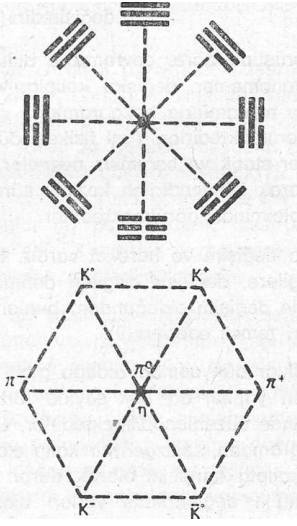
«Sekiz trigram, sürekli bir değişim olarak görülmektedir. Nasıl ki fiziksel dünyada bir fenomen diğerini sistem olarak takip ediyorsa, işte trigramlar da bu tür bir değişim içindedirler. Burada Değişimler Kitabı'nın temel kavrayışına ve temel düşüncesine rastlarız. Sekiz trigram, değişen geçici durumları simgelemektedirler. Bunlar adeta durmaksızın değişim gösteren imajlar gibidirler. Dikkatimiz ise, (genelde Batı dünyasında olduğu gibi) bu imajların varolma durumlarına değil, onların değişen hareketlerine çevrilmektedir. Bundan dolayı söz konusu sekiz trigram, nesneleri değil, nesnelerin hareket eğilimlerini temsil etmektedirler» (10).
Artık modern fizikte de atom-altı dünyasındaki «nesneleri» yukarıdakine benzer biçimde görmeye başlıyoruz. Burada da hareket, değişim ve farklılaşma önem kazanmakta ve parçacıklar devam eden bir kozmik sürecin geçici durumları olarak değerlendirilmektedirler.